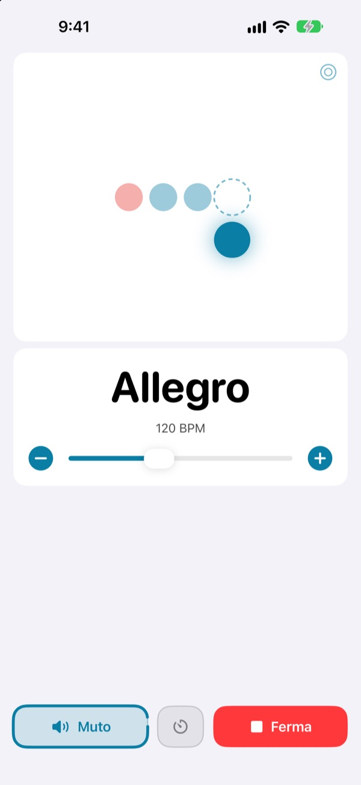
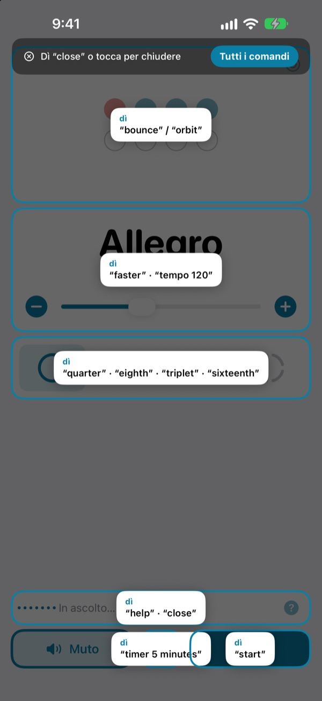
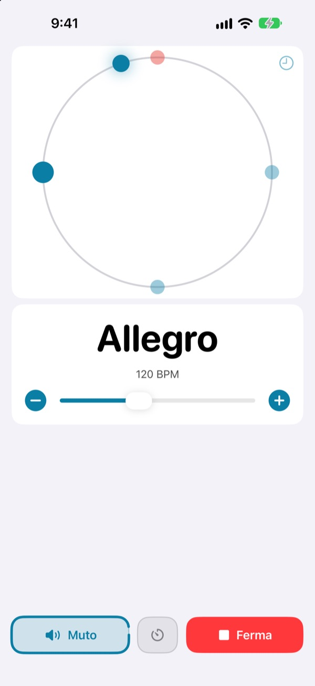
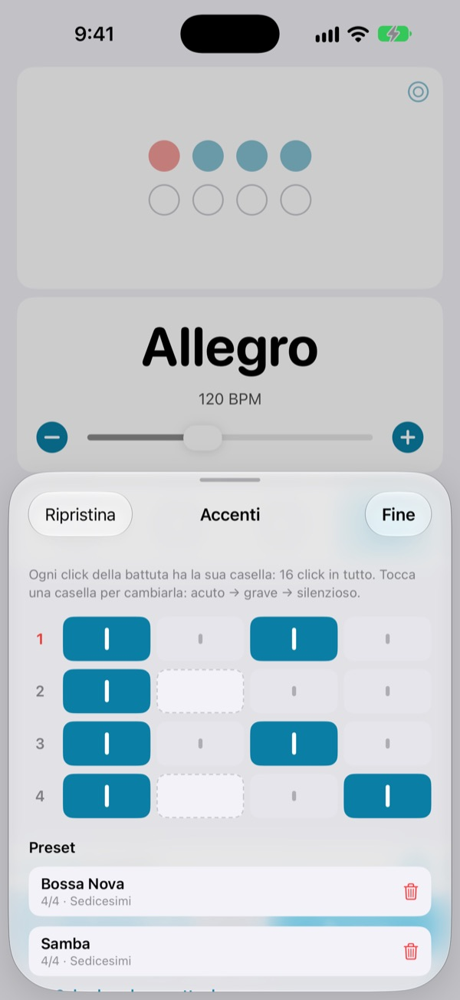

Le mani sullo strumento,
il tempo con la voce
Di’ faster a metà frase e il click accelera. I comandi sono brevi parole inglesi, e per cambiare tempo non devi più fermarti.
Il metronomo completo e il controllo vocale sono gratuiti.

Provalo a voce
Tocca una frase, oppure accendi il microfono e dilla in inglese. Alza il volume: il click si sente.
Hai mai perso il groove solo per ritoccare il tempo?
Posi l’archetto, stringi il plettro tra i denti, tocchi due volte lo schermo e la sensazione che avevi appena trovato è sparita. Not My Tempo cambia il tempo con una parola sola, senza che tu debba muoverti.
Lo dici, e ti segue
Brevi parole inglesi come start, faster e tempo 120. Ascolta appena apri l’app, senza attivare il Controllo vocale di iOS né alcuna impostazione di accessibilità.
Hai dimenticato un comando? Di’ help e sullo schermo compare tutto quello che puoi dire.

Il ritmo si vede anche
Scegli tra rimbalzo, orbita o anello. Il primo movimento della battuta è rosso e suona più forte.
Tocca a tempo sull’orbita e scopri quanto sei preciso.

Gli accenti di ogni brano, salvati
Imposta ogni click della battuta su acuto, grave o silenzioso e salvalo come preset. Crei il pattern di bossa nova o di samba una volta sola, e la volta dopo ti basta sceglierlo. (Pro)

Si parte in tre passi
- 1
Apri l’app
Inizia subito ad ascoltare.
- 2
Consenti il microfono
Solo la prima volta chiede l’accesso al microfono e al riconoscimento vocale.
- 3
Parla o tocca
Ogni comando ha anche il suo pulsante sullo schermo.
Cosa puoi dire
- start · stop
- avvia, metti in pausa
- faster · slower
- più o meno 5 BPM
- up · down
- più o meno 1 BPM
- tempo 120
- vai dritto a un tempo preciso
- double · half
- il doppio, la metà
- three beats
- cambia il tempo in battuta
- quarter · eighth · triplet · sixteenth
- semiminime, crome, terzine, semicrome
- louder · quieter · mute
- click più forte, più piano o muto
- volume 60
- imposta il volume in percentuale
- bounce · orbit
- cambia la vista dei movimenti
- timer 5 minutes
- imposta un timer di esercizio
- practice
- aumenta il tempo a poco a poco mentre ti eserciti (Pro)
- tune
- apri l’accordatore (Pro)
- help
- mostra tutti i comandi
- close · done
- chiudi un pannello
Il riconoscimento vocale funziona in inglese americano, quindi i comandi si dicono in inglese. Il resto dell’app è in italiano, e tutto si può fare anche toccando lo schermo.
Il metronomo è gratis. Pro, quando ti serve di più.
Gratis
- Tutti i comandi vocali
- Da 1 a 8 movimenti per battuta, con il primo accentato
- Suddivisioni in semiminime, crome, terzine e semicrome
- Viste a rimbalzo, orbita e anello
- Tap tempo e controllo del ritmo
- Timer di esercizio
Not My Tempo Pro
- Modalità pratica: aggiunge qualche BPM ogni poche battute fino al tempo obiettivo
- Editor degli accenti con un preset per ogni brano
- Accordatore cromatico
Abbonamento annuale con prova gratuita, oppure acquisto a vita una tantum
Il controllo vocale e le funzioni di accessibilità restano gratuiti per tutti. Hai comprato l’app prima di Pro? Tutte le funzioni Pro sono già tue.
Domande frequenti
Posso parlargli in italiano?
Il riconoscimento vocale funziona in inglese americano, quindi i comandi sono brevi parole inglesi come start e faster. Si imparano in fretta, e ogni comando ha anche il suo pulsante sullo schermo.
Non mi sente.
Controlla che lo stato del microfono sia In ascolto. Se è spento, tocca Ascolta. In una stanza rumorosa o con l’altoparlante a tutto volume, usa gli auricolari così il click non finisce nel microfono.
L’ascolto si è spento da solo.
Per risparmiare batteria, l’ascolto si spegne dopo qualche minuto senza comandi. Tocca Ascolta per riattivarlo.
Il tempo risulta la metà o il doppio.
Di’ double o half per correggerlo.
Come si usa l’accordatore?
Di’ tune oppure tocca il pulsante a onda sulla scheda del tempo. Suona una nota: quando l’indicatore entra nella zona verde, sei intonato. Di’ close per uscire.
Uso già il Controllo vocale di iOS.
Spegni il microfono dell’app e comandala dicendo il nome dei pulsanti. Ogni controllo ha un’etichetta per VoiceOver.
La mia voce viene inviata da qualche parte?
No. La voce viene riconosciuta direttamente sul dispositivo e non viene mai registrata, salvata o inviata. Metronomo, controllo vocale e accordatore funzionano anche offline.
Come disdico l’abbonamento?
In Impostazioni > Account Apple > Abbonamenti. L’abbonamento annuale si rinnova automaticamente, salvo disdetta almeno 24 ore prima della fine del periodo in corso. L’acquisto a vita è un unico pagamento.
Domande o suggerimenti? Scrivi a leeo@kakao.com.